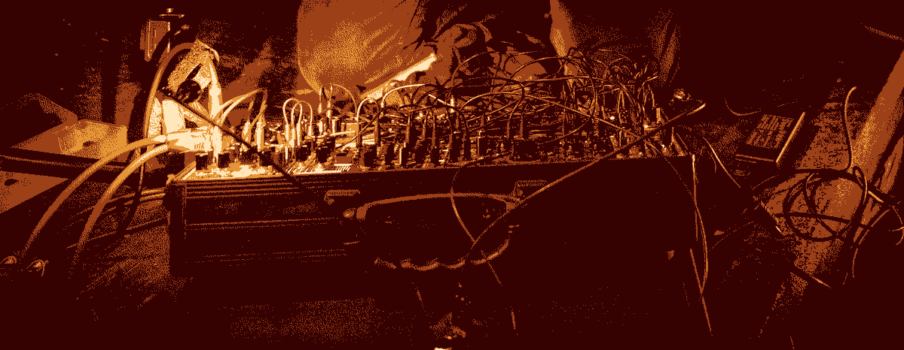
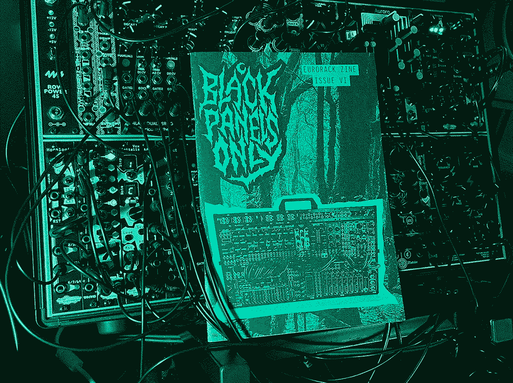

2022 - My Year in Review
01/01/2023

2022 felt busy- I only managed one issue of the zine but I’m still enjoying working on it and BPO isn’t going anywhere. It'll be a few more months til the next issue will be ready though so I thought itd be good to summarise what I’ve been up to this year and some of the modules that I’ve been enjoying.
January
I had a quiet start to the year, working on the zine, compiling tracks for a release and making some nice drones with Erica Synths Black VCO2. The Black VCO2 had been out already for a year or more- the Fusion VCO2 is probably my favourite module ever and this looked like a good oscillator to pair up with it. The modulatable sawshape on the Black VCO2 is awesome- like PWM but for saw waves and the clicky octave switch is really satisfying. Another cool feature is the switch to select linear or exponential FM- if you run a v/o sequence into the exponential FM input, you can use this to transpose your current sequence.
February
Another fairly quiet month just working on stuff in the background. I picked up an Orpho VC-LFO- a nice cheap and simple triangle LFO. The LEDs showing the output are nice and the built-in depth control saves an attenuator.
March
I released a new tape called Death-Related Sensory Experiences- a collection of 20 modular improvisations i’d recorded over the last couple of years. Mostly weird noises with a few ambient bits and a couple of melodic ones. I organised it into a loose narrative with titles taken from various Parapsychology journals from the late 19th Century onwards- imagining a series of paranormal experiments gone wrong. If this kinda stuff interests you, check out:
- Human Personality and Its Survival of Bodily Death
- Phantasms of the Living
- Deathbed observations by physicians and nurses
- Encyclopedia of Occult Sciences
March saw another Eurorack-focused zine emerge- Oskar Karlström’s My Ambient Machines which comes in a super cool package including a risograph printed poster and accompanying cassette. You can pick up issues 1 and 2 here.
Another awesome release in March was a story tape called Crust featuring music by cello & modular duo Blood & Dust. This came out on Library of the Occult- a UK label with a penchant for horror-themed synth music who have a load of cool stuff on vinyl and cassette that they’ve been putting out since 2020 including this release from OGRE who I interviewed in Issue V.
Module-wise in March I picked up the Erica Synths Black BBD- it’d been out since 2021 so not a new module but a very nice analog delay- with two delay lines that you can fade between- a longer one and a shorter one, built-in LFO and various filtering options dependent on how noisy you want it to be.
April
In April we put on the first post-lockdown Dark Alchemy event (an event series I put on in collaboration with my friends in Dead Space Chamber Music). Our events usually take place in local crypts and churches in Bristol but this time we went for local basement venue the Crown which had been renovated over the course of the pandemic with an awesome new sound system.
I was invited to perform at Birmingham Modular Organisation’s regular night at the Centrala Gallery. It was a great night with sets from John Biddulph, Mowgli and Chromatouch and modular laser visuals provided by Chromatouch. (You can see my set here)
I started experiencing some annoying unintended noise from my live case so in an effort to tidy up my signal chain a bit, I picked up a Noise Engineering Sono Abitus output module. The particular noise in question turned out to be a dodgy jack socket on my Tascam recorder but having the Sono Abitus has been great to have separate outputs for the main mix and headphones- so i can use the headphone out to test things when setting up and then as an output for recording the audio from sets instead of having to put the recorder between my main mix out and the mixing desk.
May
This month was mostly spent learning HTML from some great resources linked on Ritual Dust of Blood & Dust’s website. It was really satisfying to work on this site and have complete control compared to sites i’d built previously on generic online website builders. It was also fun to have a go at some video content for the site, starting with a video overview of my simple sequencing set up- which includes the vpme.de T43 Precision Adder that I picked up that month- it’s a really easy way to transpose sequences and get a hell of a lot more out of 16 steps.
I had the pleasure of watching Pavor Nocturnus and theskyisthinaspaperhere at the Lanes in Bristol- Pavor Nocturnus uses various gear to create brooding dark ambient and theskyisthinaspaperhere uses an xbox kinect to hands-free live code generative post-rock ambient on their own custom-built software which is then projected live.
June
This month I uploaded the website went live, along with the first lot of articles. Modular artist Yawning Youth appeared with their debut demo- they've just released their second demo EP Purgatory which you can find here.
I picked up the Aurora spectral reverb from Qu-Bit Electronix which is easily the module of the year for me. You can read the full review from August here-if you’ve overlooked this module, I highly recommend checking it out- it creates instant atmosphere and some interesting tones/FX that you won't find in many other modules.
July
I finally released Issue VI after working on it since December and almost a year since the previous issue was released. You can read my thoughts on the issue here. In the intro I mentioned that, despite post-pandemic hangovers and chip shortages, it felt like a good time for Eurorack with gigs returning and new companies and modules. That comment aged like fine milk though when in the following months WMD and Hexinverter both announced they would be closing, which were just the latest in a string of similar announcements of closures, delays, price rises and other struggles experienced by companies. This is not to mention the horrifying ongoing attacks in Ukraine. See the Erica Synths page for updates on their Music For Peace fundraising campaign and also the Noise Engineering blog for some useful links and information.
My optimism came from the new modules and makers that seem to appear almost daily though of course this doesn’t detract from the feeling of loss at the departure of some huge module makers like Mutable Instruments who, though un-related to the above issues, officially closed down this year. As the issues are set to persist in 2023, it’s more important than ever to support the makers we love. To inspire a bit of hope, at the end of this article I've included a list of some new makers to look forward to modules from.

Also in July another new synth zine appeared in the form of Modul8- a glossier and chunkier affair clocking in at a nice 56 pages. You can grab Issue 1 here.
August
A busy month with another Dark Alchemy event (you can see my set in full here) which went really well. This month also saw the release of Black Panels Only logo t-shirts of which there are still a couple available.
I picked up the Noise Engineering Mimetic Digitalis to experiment with as an upgrade from the Vox Digitalis- it’s still a 16-step sequencer but with 4 different channels. I’m still getting used to it- programming in specific melodies/basslines into it isn’t much fun without the benefit of a screen like on Vox Digitalis but it’s doable with a tuner to hand- dialing specific things isn't really the intention of the module- more a happy accident machine with "shred" functions for creating random sequences but it's working well enough for my purposes too. The extra channels unlock a lot for me and running a spare channel into the precision adder means i can add a variation to a channel at the flick of a switch. The CV inputs on the MD to mess with the order of the notes are pretty cool- especially with some synced-yet-faster modulation it makes some interesting arpeggios.
I also picked up a 0HP gate to trigger module from Herzlich Labs- such a handy little thing- it allows me to use the Erica Synths Dual ASR as an AR which I use for a bit of noise percussion with some noise form Żłob Modular Entropy sent through the Vnicursal VCA.
September
I was back in Birmingham for BMO's Drone Bath event- a pretty crazy set-up with about 12 artists performing at the same time for two hours in bath cubicles in a Victorian bath house. The sound was quite chaotic but in a good way with lazers lighting up the ceiling and a great line-up of people involved. Felt very privileged to be involved in this, such a unique space and concept- everyone's drones merging in a literal sound bath, in actual baths. You can check out Sonic State's coverage of the event below. Everyone had to bring their own amplification for which I got a Mackie Thump GO- a battery powered PA speaker that also doubles as a monitor- probably louder than i'd ever need it to be and sounds good so i'm expecting it to be useful for future events.
October
A disortion-fuelled month as I finished my review of Animal Factory Amps Baron Samedi Fuzz and also received the Sovage Engineering L'ÉCORCHEUR Distortion Filter.
October did see some melodies too though as I experimented with the Quad Quantizer from Tenderfoot Electronics. A load of scales at the twist of a knob as well as the ability to program in your own and built-in sample & holds for each channel.
November
Another Dark Alchemy event- this time in a space that was new to us- the Crypt of the Mount Without in Bristol ("Without" because historically it sat just beyond the city wall). We had awesome sets from Dead Space Chamber Music and hackedepicciotto (featuring Alexander Hacke of Einstürzende Neubauten). The venue is a lot posher than our usual crypts with luxuries like heating and toilets but still with a great atmosphere. I also got to meet Cessative State who came along. I went down to London the following night to help out with the second night of the mini-tour and got to have a brief Eurorack chat with Daniel Miller of Mute Records, who released hackedepiccotto's latest album - The Silver Threshold.
November saw a new tape release 355/113 from Onur Żłobnicki of Żłob Modular. A pretty intense, compelling mix of noises and drones. Physical copies are still available to add to your modular tape collection.
Also this month Cessative State and Monaural Machine released their split tape of dark industrial which you can still grab here.
December
I was grateful to be offered an impromptu support slot for touring Berlin electro punk duo Twin Noir who were playing at Crofters Rights, arranged by local promoter, underground champion and lovely human Ricardo Camembert (full video of my set here). Twin Noir put on an awesome show as did Roman who opened the night with a screaming harsh noise set with a gigantic pedal board. Also had the pleasure of meeting Roman's boss Jack of Beep Boop Electronics- local Eurorack makers and synth repairers- who put out some great stuff such as super cheap USB power and lo-fi tape sampler modules.
One snowy Sunday, Dead Space Chamber Music and I spent a rather chilly day in RS Studios for the Dark Alchemy Winter Solstice Stream. For this I prepared a short set of medieval Carols sequenced via Renoise through the Michigan Synth Works 2HP2CV- a version of Mutable Instruments' CVpal.
I was kindly gifted an Audio Parasites black Maths panel from Dr. Krinkle and the loyal BPO readers in Australia and so ended the year grabbing a classic. I'd previously held off on Maths as the layout of the channels always seemed a bit unintuitive but you get used to it in no time and it's a lot of fun to self-patch and I was quickly able to see the what the fuss is all about- it's so useful having so many utilities squished into one module and with the black panel and some Noise Engineering knobs, it looks nice too.
Overall I had a great year playing a couple of gigs, meeting some cool new people and getting to have some in-real-life chats about modular and trying lots of new modules. In 2023 i'm looking forward to more of the same, getting Issue VII done and hopefully finishing another tape release.
Here are a few module releases from 2022 that escaped me but I am excited to try out in the future:
- WMD - Legion looks awesome, so much goodness crammed into an 8HP oscillator, the Swarm function looks particularly cool.
- Animal Factory Amps - Bonesaw the panel designs and light-up attenuators make all their modules appealing and i've always got time for more distorting filters.
- Future Sound Systems - FIL4 Timbral Sculptor a filter, VCA, wavefolder combo and the latest module from this local Bristol-based company. I've been enjoying their gristleizer modules for years and everything they put out looks awesome.
- Qu-Bit Electronix - Nautilus a lot of hype around this delay but from the demos it seems well-deserved. A similar approach to Aurora in the amazing-looking panel that provides useful LED feedback about the functions and easy-access USB for customising the settings.
- Befaco x Molten Modular - Motion Mtr I'm aware of how easily i'm swayed by pretty lights but unless you have perfectly trained ears, the feedback is always usful and creates a nice experience and more importantly it looks to have a really well-designed set of features.
And finally, to give you a dose of optimism for the future, here's a whole load of new, newish, or at least new-to-me module makers doing some really cool stuff, to check out and keep an eye on in 2023: